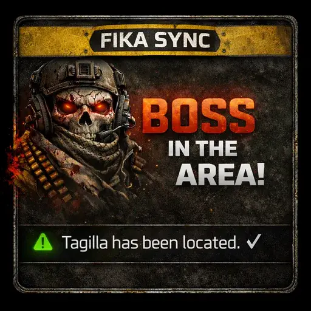

Addon
BossNotifier - Fika Sync Addon
- Downloads
- 1,787
🎮 Fika Sync Addon for BossNotifier
This addon enables boss notification synchronization in Fika multiplayer sessions.
✨ Features
- Boss sync: Clients receive boss location data from host at raid start
- Death sync: When a boss dies, all players see “eliminated” status
- Seamless: Works automatically, no configuration needed
📋 Requirements
- BossNotifier v1.1.1+
- Fika 2.1.0+
📦 Installation
- Install BossNotifier (main mod)
- Install this addon
- Extract the archive
- Copy BepInEx folder to your SPT directory
SPT/
└── BepInEx/
└── plugins/
└── BossNotifier.dll
🔧 How it works
- Host detects bosses and sends data to all clients
- Clients receive boss locations and can press O to see notifications
- When host kills a boss, all clients see “eliminated” status
If you enjoy what I do buy me a coffee ko-fi.com/dr3vik
Version
1.0.0
Parent mod 1.1.1
1,787 downloads3.8 KB
🎮 Fika Sync Addon for BossNotifier
This addon enables boss notification synchronization in Fika multiplayer sessions.
✨ Features
- Boss sync: Clients receive boss location data from host at raid start
- Death sync: When a boss dies, all players see “eliminated” status
- Seamless: Works automatically, no configuration needed
VirusTotal: report 1